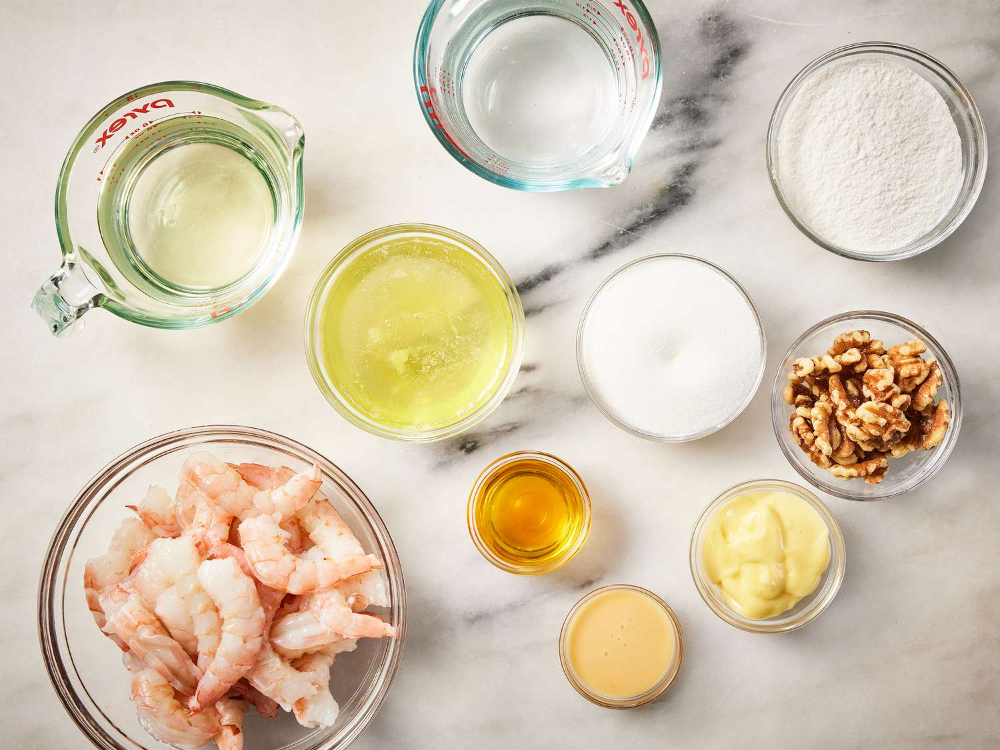
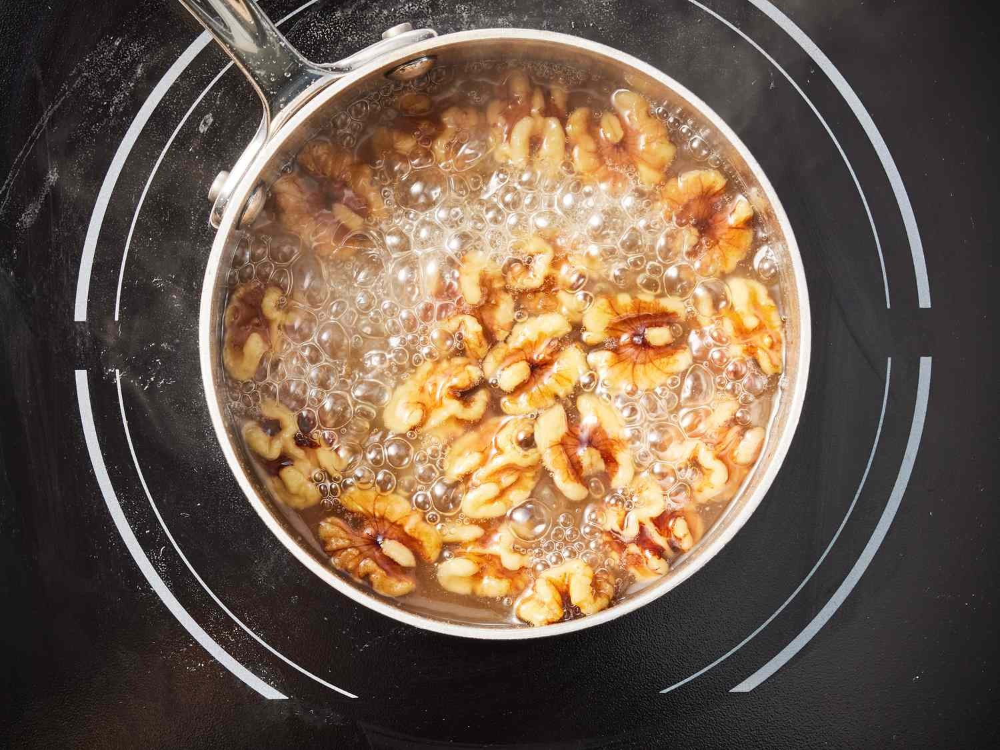
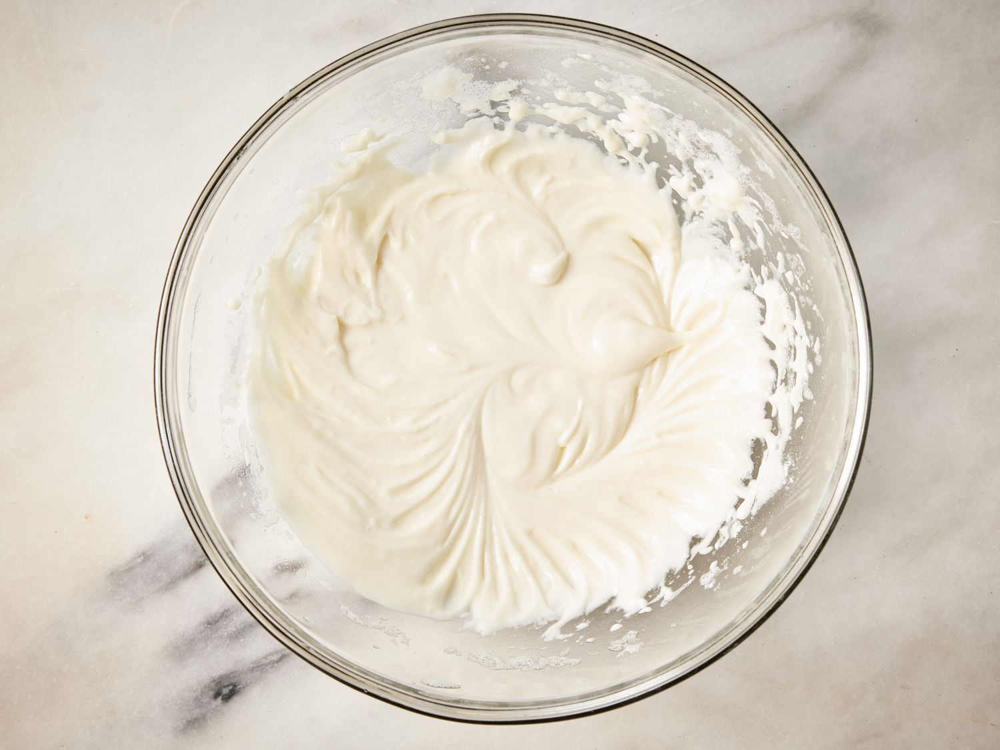
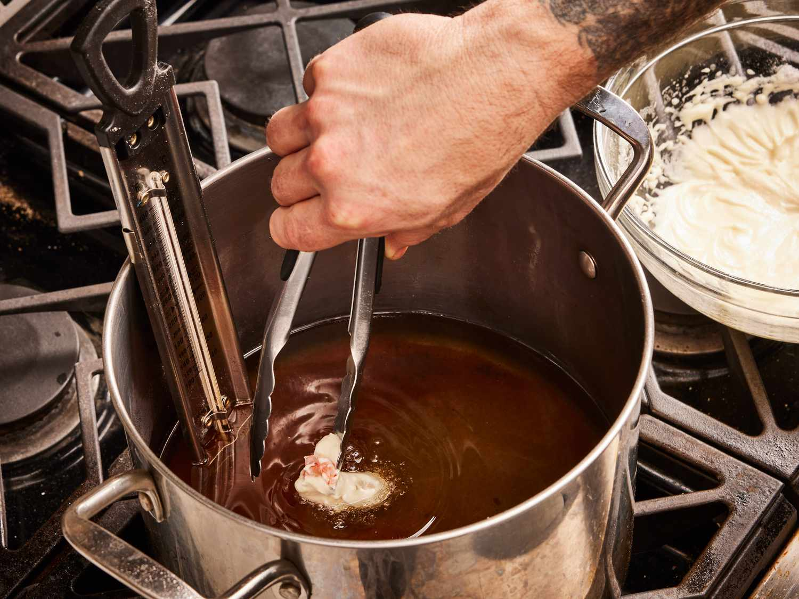
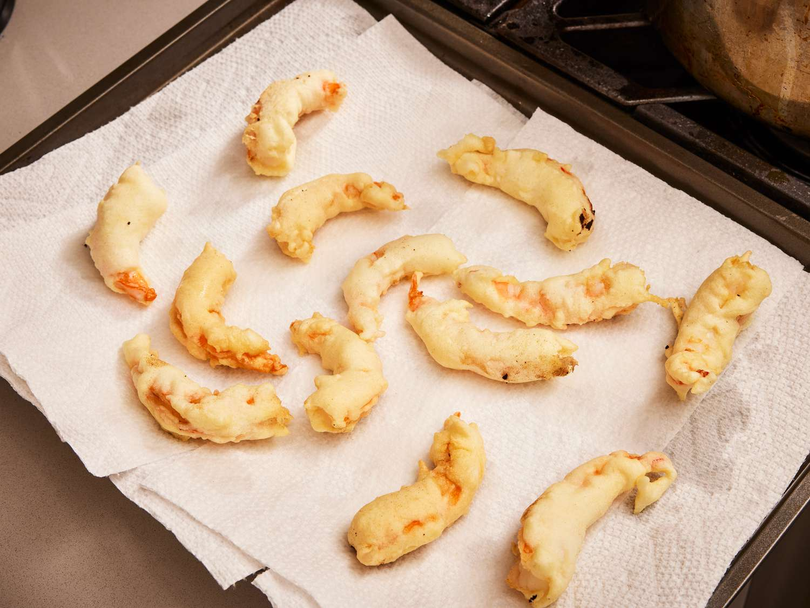
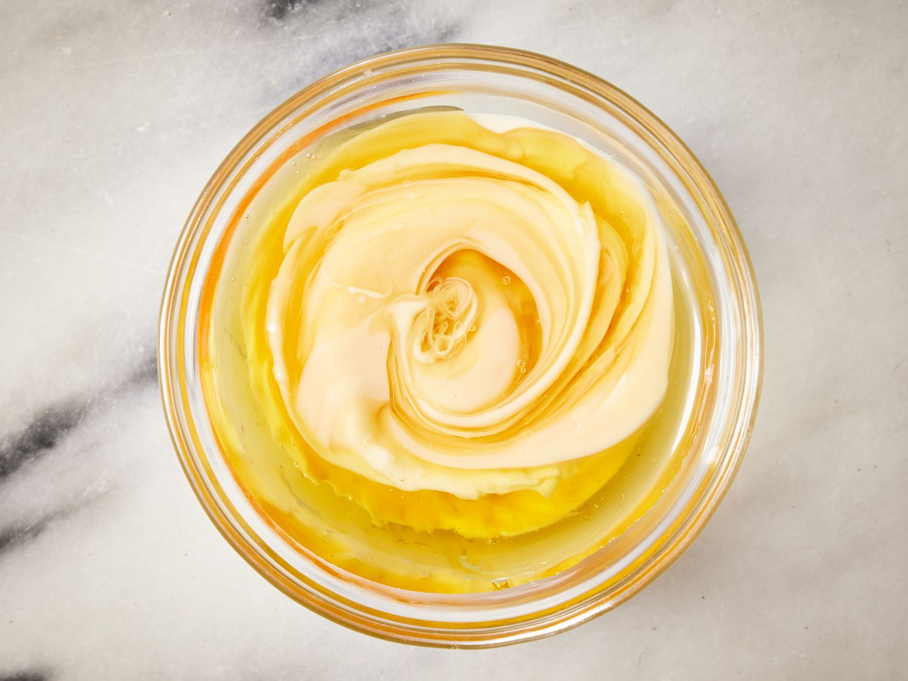
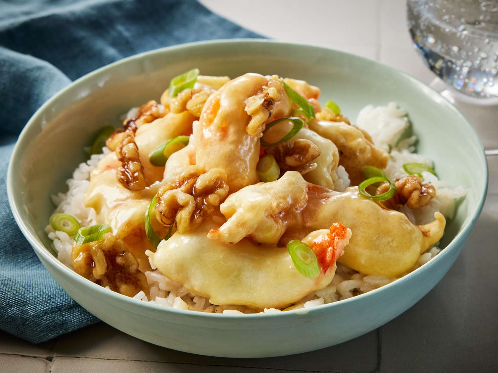

Honey Walnut Shrimp is a delicious, indulgent dish that's a favorite in Chinese-American cuisine. It's known for its sweet and creamy sauce, crispy shrimp, and a rich crunch from the candied walnuts. It's a perfect balance of savory, sweet, and crunchy.
Honey Walnut Shrimp
Ingredients
1 cup or 250 ml Water
2/3 cup white sugar
1/2 cup walnuts
4 large egg whites
2/3 cup mochiko (glutinous rice flour)
1 cup vegetable oil for frying
1 pound or 454 grams large shrimp, peeled and deveined
1/4 cup mayonnaise
2 tablespoons honey
1 tablespoon canned sweetened condensed milk
Directions

Gather all ingredients.

Stir water and sugar together in a small saucepan over high heat. Bring to a boil and add walnuts. Boil for 2 minutes, then drain and place walnuts on a cookie sheet to dry.

Whip egg whites in a medium bowl until foamy. Stir in mochiko until it has a pasty consistency.

Heat oil in a heavy deep skillet over medium-high heat. Dip shrimp in mochiko batter, then fry in batches in hot oil until golden brown, about 5 minutes.

Remove with a slotted spoon and drain on paper towels.

Stir together mayonnaise, honey, and sweetened condensed milk in a medium serving bowl.

Add fried shrimp and toss to coat with sauce. Sprinkle candied walnuts on top and serve.